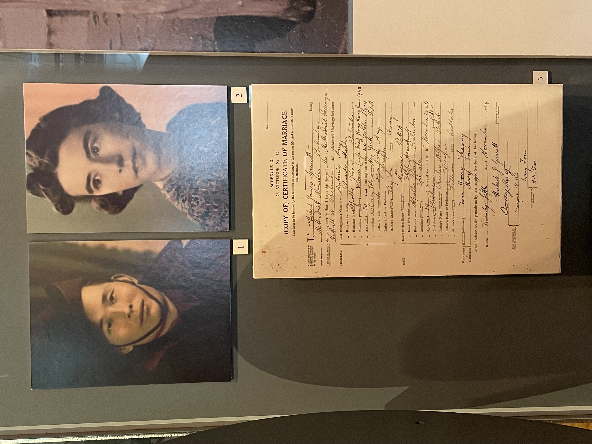

在澳洲海事博物馆的一角，有一块很容易被忽略的展板。我最初只是路过，但上面的两张黑白照片让我停了下来。主人公叫Tony Ang，是一位年轻的水手。他的船在二战中被鱼雷击中，而他本人于1942年3月，也就是日军偷袭珍珠港三个月后，到达了西澳的珀斯。彼时大约有2000名华人在经历相似的遭遇后来到了澳大利亚，在”白澳”（White Australia）政策下，他们以临时难民的身份才得以留在澳洲。
Tony就地加入了澳军，但第二年就退役，来到了布里斯班的郊区布林巴 (Bulimba)。那里有一个华人的聚居区。澳洲政府一方面对华人抱有敌意，另一方面又急需劳动力以图在澳洲建立一个面向太平洋的军事基地，所以将很多华人安置于此。Tony在这里为美军建造登陆艇以及其他军民用设备。他也在这里遇到了一个名叫Marjorie Pettit的当地女孩，两人相爱并于1944年成婚。
{kind=link}

到1949年，他们已经养育了三个孩子。此外还有300余名华人也在当地成立了家庭，这些人都希望留在澳洲继续现在的生活。作为回应，时任移民部长卡尔韦尔（Arthur Calwell）引入了《战时难民遣返法案》，准备将约800名在二战时进入澳洲的非白种人驱逐出境，Tony自然也在其中。在被驱逐出境相威胁下，在澳洲生活了七年的Tony于1949年6月30日登上了开往九龙的Changte轮。这是一艘1925年在香港建造、往返澳洲与香港之间的客货轮。尽管他的妻子Marjorie和三个孩子并不在驱逐之列，但他们还是一同登上了Changte轮。
在香港，Tony既没有亲朋又没有工作，全家生活在香港的贫民窟中。在三个孩子相继生病后，Marjorie迫不得已带着他们于同年年8月回到了澳洲。不久后，Tony在半山的策文书院（Chatham English School）找到了一份校园食堂经理的工作，Marjorie带着三个孩子于10月又启程第二次前往香港。同时，Marjorie也直言会就破坏她家庭的行为向澳洲政府抗争到底。
1949年底，新的澳洲政府上台，事情似有转机但仍未结束。在Marjorie的持续申诉下，澳洲移民局在1950年6月发函，确认将给Tony五年的居留期。全家在同年9月启程前往悉尼，之后他们还生育了三个儿子。Tony最终于1961年成为澳洲公民。
讽刺的是，在博物馆另一侧不过十步的地方，展示着二战后从热那亚出发移民澳洲的三名欧洲女性的故事——在白澳政策下，急需劳动力的澳洲政府殷切欢迎超过200万名因战争家园破碎的欧洲白人移民澳洲。